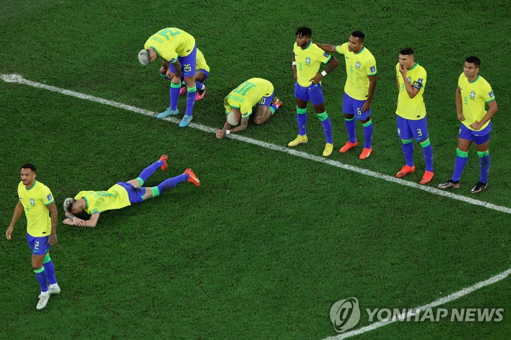

- html
- css
- javaScript
javaScript이란 무엇인가?
강력한 '우승 후보' 브라질이 크로아티아와 승부차기에서 패하며 2022 카타르 월드컵 8강에서 탈락했다.
브라질은 10일(한국시간) 카타르 알라이얀의 에듀케이션 시티 스타디움에서 열린 크로아티아와 2022 카타르 월드컵 8강전에서 연장전까지 1-1로 비긴 끝에 승부차기에서 2-4로 패했다.
한국을 4-1로 제압한 16강전과 달리 브라질은 크로아티아를 상대로 내내 고전했다.
네이마르(파리 생제르맹)와 히샤를리송(토트넘), 비니시우스 주니오르(레알 마드리드), 하피냐(바르셀로나) 등
한국전 선발 라인업을 그대로 들고나온 브라질은 크로아티아를 상대로는 0의 균형을 쉽게 깨지 못했다.

전반 슈팅 개수에서 브라질이 5(유효 슛 3)-3(유효 슛 0)으로 우위를 점했으나, 크로아티아가 강한 전방 압박과 촘촘한 수비로 맞서면서 팽팽한 흐름이 이어졌다.
크로아티아는 전반 13분 마리오 파샬리치(아탈란타)가 오른쪽 측면에서 올린 크로스에 이반 페리시치(토트넘)가 오른발을 가져다 댄 게 빗맞아 마무리를 짓지 못한 게 아쉬웠다.